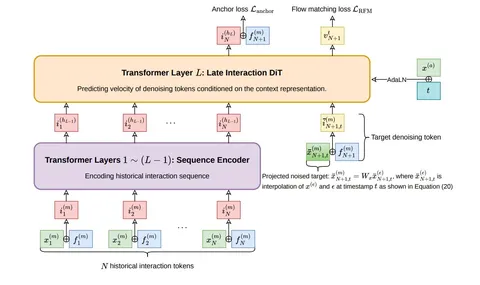

Сегодня разбираем статью TikTok о генеративной кандидатогенерации с помощью flow matching. Авторы предлагают учить распределение следующего айтема в непрерывном пространстве эмбеддингов, чтобы учитывать несколько разных интересов пользователя.
В обычном user-to-item-подходе модель кодирует пользователя одним эмбеддингом и ищет ближайшие к нему айтемы, однако с таким подходом невозможно закодировать несколько интересов единовременно. Для решения этой проблемы пользователя можно кодировать несколькими эмбеддингами, но тогда модель сможет представить лишь заранее заданное число интересов.
Ограничение снимает авторегрессивный подход с генерацией Semantic ID, который способен моделировать более сложное распределение следующих айтемов. Однако для этого исходные эмбеддинги квантуют, что приводит к потере информации, а последовательное авторегрессионное декодирование имеет малую пропускную способность.
Авторы предлагают решить эти проблемы, генерируя эмбеддинги напрямую с помощью flow matching, следующим образом:
1. По пользовательскому контексту трансформер предсказывает якорь — индекс семантического кластера следующего айтема.
2. Затем тот же трансформер работает как DiT: с помощью flow matching он преобразует случайный шум в эмбеддинг, обусловливаясь на пользовательский контекст и выбранный якорь. Поскольку эмбеддинги айтемов нормированы и лежат на единичной сфере, авторы используют Riemannian flow matching вместо евклидового. Чтобы сократить вычисления, применяется позднее связывание: на каждом шаге генерации заново применяется только последний слой трансформера.
3. По получившимся эмбеддингам находят ближайших соседей в ANN-индексе.
Как отмечают авторы, якорь не принципиально обязателен, но без него задача усложняется, а итоговое качество снижается. В их экспериментах удаление якоря снизило средний Recall@20 с 10,76% до 8,71%.
В офлайн-экспериментах X-Rec дал +0,53 п. п. Recall@20 относительно авторегрессионного варианта на Semantic ID при пропускной способности генерации в 3,46 раза выше. ANN-поиск в измерение скорости не включали.
Отдельно авторы проверили, как лучше распределить фиксированный бюджет кандидатов: сгенерировать меньше эмбеддингов и найти больше соседей для каждого или сгенерировать больше эмбеддингов и взять по одному соседу. Для X-Rec увеличение разнообразия действительно сопровождалось ростом качества. При переходе от одного эмбеддинга к десяти средняя попарная косинусная близость снизилась с 1 до 0,823, а Recall@20 вырос с 8,28% до 9,63%. У детерминированного multi-interest U2I-подхода близость снизилась ещё сильнее — с 1 до 0,696, однако Recall@20 упал с 6,98% до 5,32%. Неожиданно такой же эффект наблюдался при повышении температуры семплирования якорей: при росте температуры с 0,8 до 1,6 средняя попарная косинусная близость снизилась с 0,809 до 0,779, а Recall@20 вырос с 10,38% до 10,84%.
В онлайне X-Rec добавили как новый кандидатогенератор для одной тематической вертикали TikTok. Авторы заявляют суммарный эффект запусков: +4,1484% вовлечённости в вертикали и +0,0111% общей вовлечённости в TikTok.
Основной результат работы — получилось успешно применить flow matching к кандидатогенерации, действительно учитывая разнообразные интересы пользователя и доведя до продакшена с приростом онлайн-метрик.
@RecSysChannel
Разбор подготовил
